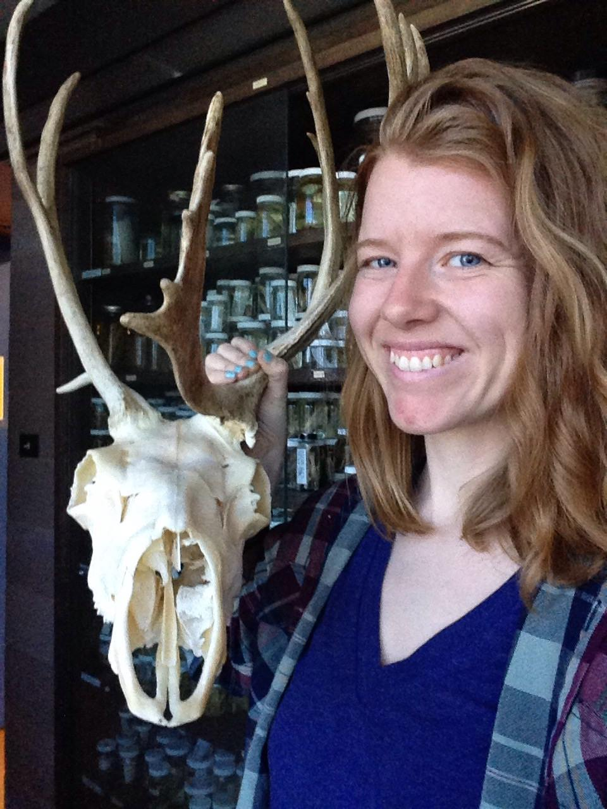

About

I did my undergraduate degree at the University of Ottawa, double-majoring in English and Biology. After taking a year off to work and travel, I completed an MSc with Nathan Lovejoy at the University of Toronto, studying a species complex of weakly electric knife fish (Gymnotus carapo). I am currently doing a PhD at Texas A&M University (TAMU), using a macroevolutionary framework to study speciation, hybridization, and the role of sexual selection and sexual conflict in mediating these phenomena. Between completing my MSc and beginning my PhD, I was a technician in the Biology Department and curator at Claude Garton Herbarium at Lakehead University.
CVResearch
Hybridization is a pervasive feature of organic evolution. However, some groups of organisms show extensive histories of hybridization while others do not and the causes of this variation are not yet well-known. In the simplest terms, hybridization has an inverse relationship with genetic and physical distance; closely related species are more likely to have experienced hybridization events than distantly related ones, and hybridization can only occur when species’ ranges overlap (i.e. there is opportunity).

In speciation, reproductive barriers between species are often found to be loci or regulatory sequences that exhibit high rates of evolution. One cause of an accelerated rate of evolution is sexual conflict, where the ideal genotypes differ between sexes; if genetic sexual conflict is strong enough, rapid sequence divergence can occur, effectively isolating one population from another in an evolutionary arms race (Sexually Antagonistic Co-evolution or SAC). Though sexual conflict occurs in both pre-fertilization (pre-zygotic) or post-fertilization (post-zygotic) contexts, it is most likely to affect lineage isolation in post-zygotic contexts.
Viviparity is particularly susceptible to post-zygotic sexual conflict. Mediated by the paternal genetic contribution to the fetal genome, offspring manipulate maternal physiology to confer the most nutrients possible via close association with female tissues. In turn, mothers provision offspring with enough to survive while maintaining her own fitness (the viviparity-driven conflict hypothesis or VDCH). Although it has been well-studied in microevolutionary contexts, macroevolutionary studies are lacking, especially in vertebrate taxa.

To do this, I am building a whole-genome phylogeny of the livebearing fishes of the family Poeciliinae. This family includes species commonly found in the pet trade (swordtails, mollies, and guppies) alongside some of the less well-known genera such as Phalloceros and Gambusia. The Poeciliinae are particularly interested because they present an opportunity to examine how traits shaped by sexual conflict may preclude hybridization and facilitate speciation. Distributed widely across the Americas, the Poeciliinae exhibit a continuum of live-bearing strategies, from fishes that carry fully yolked eggs (lecithotrophic) to those with a placenta-like follicle (matrotrophic) that nourishes young through development. However, despite the universal state of live-bearing, fishes within this taxon hybridize widely and there are at least two species of putative hybrid origin. Further, work on the lecithotrophic genus Xiphophorus shows that hybridization is not only recent but ancient as well. Poeciliinae also show sexual characters that correspond to reproductive mode: a high degree of matrotrophy corresponds with sexual monochromatism, size increases in male genitalia (gonopodium), and coercive mating behaviors, while lecithotrophic species are dichromatic, have comparatively small male genitalia, and exhibit female mate choice. This relationship is hypothesized to indicate increasing post-zygotic sexual conflict with increasing degrees of matrotrophy.
Publications
Lehmberg, E.S., McKee, G., and Rennie, M.D. Hiding in plain sight: Using amateur naturalist records and herbarium vouchers to examine climate change effects in the early-blooming vascular plants of Northwestern Ontario, Canada. Canadian Field Naturalist. In press.
Hancock, Z.B., Lehmberg, E.S., and Bradburd, G.S. Neo-Darwinism still haunts evolutionary theory: A modern perspective on Charlesworth, Lande, and Slatkin (1982). Evolution. 2021. DOI. PDF
Lehmberg, E.S., Elbassiouny, A.A., Bloom, D.D., López-Fernández, H., Crampton, W.G.R., and Lovejoy, N.R. Fish biogeography in the “Lost World” of the Guiana Shield: Phylogeography of the weakly electric knifefish Gymnotus carapo (Teleostei: Gymnotidae). Journal of Biogeography. 2018. DOI. PDF
Elbassiouny, A.E., Schott, R., Waddell, J.C., Kolmann, M.A., Lehmberg, E.S., Van Nynatten, A.D., Crampton, W.G.R., Chang, B., and Lovejoy, N.R. Mitochondrial genomes of the South American electric knifefishes (Order Gymnotiformes). Mitochondrial DNA Part B. Vol. 1. 2016. DOI. PDF
Resources
UNDER CONSTRUCTION! I am working on adding resources here in winter/spring of 2022
This section has resouces that have helped me navigate learning new skills, graduate school, and academia. I hope they're useful for you too!
Coding
Linux
Python
SliM & Eidos
Graduate School
Undergraduate STE(A)M Resources
Texas A&M University
Undergraduate Job List 2022
Graduate students in EEB at Texas A&M University collate this list every year as jobs are posted on social media and elsewhere. Definitely share it with others if you want! If you have any question, feel free to email me.
Anti-Racist & Anti-Colonial Resources
Books
Academic Papers and Journalism
Google drive with journal articles and newspaper articles that gets updated as often as possible.
Contact
Magnam dolores commodi suscipit. Necessitatibus eius consequatur ex aliquid fuga eum quidem. Sit sint consectetur velit. Quisquam quos quisquam cupiditate. Et nemo qui impedit suscipit alias ea. Quia fugiat sit in iste officiis commodi quidem hic quas.
Location:
A108 Adam Street, New York, NY 535022
Email:
info@example.com
Call:
+1 5589 55488 55s